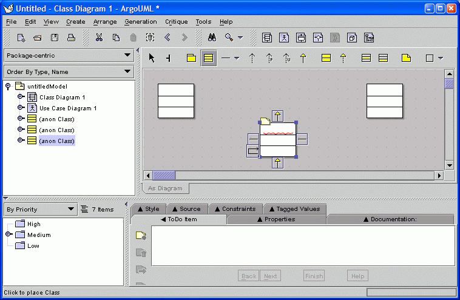
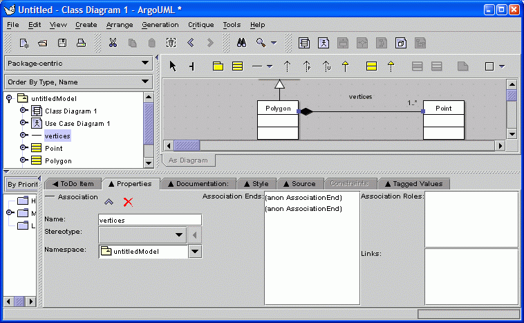
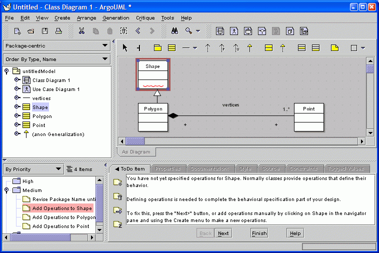
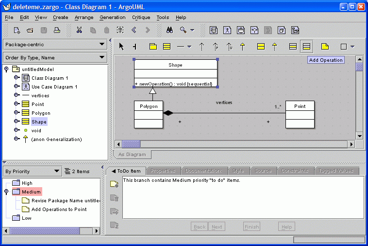
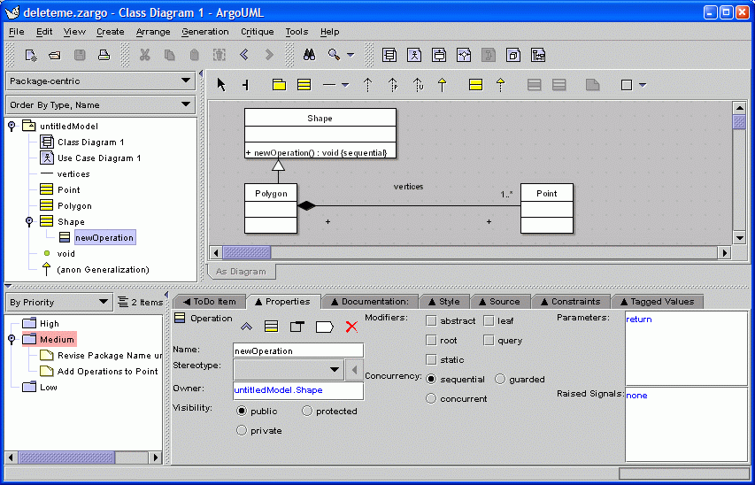
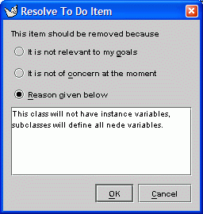

This tour consists of 18 screens, each of which is described in a section of this
page:
(The first 10 screenshots in this tour were made with ArgoUML v0.15.2)
Back to ArgoUML Tours
Back to ArgoUML Home
This is what users see while ArgoUML loads.

The tool starts with an empty design document.

Classes can be added to the untitled diagram by clicking on the class icon in
the toolbar.
Double clicking on a toolbar button "locks" that tool untill the arrow
tool is selected.
The yellow sticky notes and wavy, red underlines indicate
incomplete or problematic parts of the design.
Placing the mouse over a
sticky note or wavy line will display a blue tool-tip that briefly describes the
problem.

The user can set the name of a class or association by simply selecting it and typing.

Double clicking on a name allows the name to be edited. You can double click on the other compartments of the class to edit them.

The "Properties" tab in the details pane shows details of the selected model element.

Asssociations also have properties.

ArgoUML contains design critics that continuously analyze the design and produce
"to do" items that point out problems and incompleteness.
When a "to do" item is selected, the "offending"
element of the design is highlighted in red
and a brief description is shown in the details pane.

The user decides to follow this critic's advice and add an operation via a toolbar button. ArgoUML gives it by default the name "newOperation()".

When a model element is selected
in the explorer, its details are shown
in the "Properties" tab.
Note that the criticism that class Shape has no operations has been automatically removed.

Design checklists are commonly used in review meetings to help catch design errors
and prompt thinking.
Argo provides checklists that are specific to the selected model element.

This is an example of a critic with knowledge of limitations of the target language.

Source code for the selected model element is shown in the "Source" tab if appropriate. In the future, ArgoUML will parse what the designer types here and update the model. Not shown: the designer can enter comments in JavaDoc format by using the "Javadocs" tab.

The explorer can show any one of several task-specific hierarchical views on the model. Each view is called a "exploring perspective" and clarifies a certain kind of structure in the model. Here, inheritance is emphasized. Other explorer perspectives emphasize associations, states, or transitions.

This critic reminds the designer to add instance variables to class Shape. The designer considers the advice but decides against following the critic's advice, and clicks the "Resolve Item" icon to dismiss the item.
The "Dismiss Feedback Item" dialog prompts the designer to record an explanation for his or her decision. This explanation will be added to the design history for later reference.

This dialog allows designers to customize or define new explorer perspectives. Each perspective is composed of a set of rules that generate the children of each node in the tree. Here we see that the Inheritance-centric perspective will start at the project, packages in a project will be shown, base classes in a package will be shown, and each class will show its subclasses. As an example, we have added in a new rule that makes each class show its operations (i.e. Classifier -> BehavioralFeature).

This is the result of modifying the Inheritance-centric perspective to also show
operations by selecting rule "Class -> Operations".
Compare this to screenshot 14.
Back to ArgoUML Tours
Back to ArgoUML Home